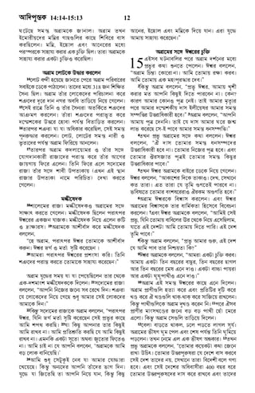

বাইবেল কি?
একটি বড় বই?
বাইবেল সম্পর্কে আমরা প্রথম যে জিনিসগুলি আবিষ্কার করি তা হল এটি মোটেও একটি একক বই নয়, তবে 66টি বইয়ের সংগ্রহ! যদিও আমরা তাদের বই বলি, বাইবেল আসলে গল্প, ইতিহাস, কবিতা এবং গান, জীবনী এবং বেশ কিছু চিঠি নিয়ে গঠিত। ( এটি ই-মেইলের আগে ছিল, মনে আছে? )
যেহেতু এটিতে বিভিন্ন ধরণের লেখা রয়েছে, তাই বাইবেল সাধারণত কভার থেকে কভার পর্যন্ত পড়া হয় না যেমনটি বেশিরভাগ আধুনিক বই (যদিও এটি অবশ্যই হতে পারে)। বরং, বিশ্বাসীরা সাধারণত বাইবেলে আসে নির্দিষ্ট অনুচ্ছেদ পড়তে, যেমন যীশুর গল্প বা ঈশ্বরের উদ্দেশ্যে লেখা প্রশংসার গান।
ডানদিকের ছবিটি দেখায় কিভাবে বাইবেলের বইগুলোকে শ্রেণীতে (বা শৈলী) ভাগ করা হয়েছে।
বাইবেল কেন এতগুলি বিভিন্ন বইয়ের সমন্বয়ে গঠিত তা বোঝার জন্য, এটি বাইবেলের ইতিহাস এবং এটি কীভাবে লেখা হয়েছে তা সম্পর্কে কিছুটা জানতে সহায়তা করে। ঈশ্বর প্রায় 3,000 বছর আগে মানবজাতির কাছে তাঁর বার্তাগুলি লিখতে মানুষকে অনুপ্রাণিত করতে শুরু করেছিলেন (প্রাথমিক তারিখগুলি একটু অস্পষ্ট)। প্রায় 1,600 বছরের ব্যবধানে, ইতিহাসের বিভিন্ন সময়কাল এবং বিশ্বের বিভিন্ন স্থান থেকে অন্তত চল্লিশজন বিভিন্ন লেখক তা লিপিবদ্ধ করেছেন যা ঈশ্বর তাদের বলতে অনুপ্রাণিত করেছিলেন।
এবং এখনও, লেখকদের এই বৈচিত্র্যময় দল থাকা সত্ত্বেও, বাইবেল মূলত একটি একক গল্প বলে: সেই গল্প যা মানুষকে যীশুর দিকে নিয়ে যায়, যিনি ছিলেন বিশ্বের কাছে ঈশ্বরের চূড়ান্ত বার্তা।

বাইবেল একটি ভয়ঙ্কর বড় বই মত মনে হতে পারে. কিছু লোক মনে করে বা তারা শুনেছে যে বাইবেল রহস্যময় বা বোঝা কঠিন। তাদেরকে হয়তো বলা হয়েছে যে শুধুমাত্র মন্ত্রী বা পুরোহিতরাই বাইবেল বুঝতে পারে।
এই কারণেই এটি বাইবেল আসলে কী তা জানতে সাহায্য করে: সর্বত্র সমস্ত মানুষের জন্য ঈশ্বরের বার্তা, সাধারণ মানুষ (সবাই!) পড়ার উদ্দেশ্যে।

একটি টেস্টামেন্ট কি?
"টেস্টামেন্ট" শব্দটি আমাদের একটি উইল ("শেষ উইল এবং টেস্টামেন্ট") সম্পর্কে ভাবতে পারে: একটি আইনী দলিল যা একজন ব্যক্তির ইচ্ছা প্রকাশ করে যে তারা মারা গেলে তাদের সম্পত্তি এবং সম্পত্তির কী হবে। বাইবেলে, যীশুর পৃথিবীতে আসার অনেক আগে, ঈশ্বর সর্বপ্রথম তাঁর ইচ্ছা প্রকাশ করেছিলেন যে লোকেরা তাঁকে তাদের একমাত্র ঈশ্বর হিসাবে জানবে এবং উপাসনা করবে; বিনিময়ে, ঈশ্বর পুরুষদের তাদের পাপ ক্ষমা করবেন। বাইবেলের প্রথম বিভাগ, ওল্ড টেস্টামেন্ট, মানবজাতি কীভাবে ঈশ্বরের ইচ্ছার প্রতি সাড়া দিয়েছিল তার গল্প।
কারণ মানবজাতি ঈশ্বরের ইচ্ছা অনুসরণ করেনি, ঈশ্বর তাদের ক্ষমা করার জন্য একটি নতুন উপায় স্থাপন করেছিলেন: যীশু, তাঁর একমাত্র পুত্র, তাদের পাপের জন্য মারা যাওয়ার জন্য পৃথিবীতে পাঠানো। যীশুর গল্প এবং যারা তাঁকে অনুসরণ করতে বেছে নিয়েছিলেন তারা ঈশ্বরের নতুন নিয়মের গল্প, বা ইচ্ছা, তাঁর সৃষ্টি করা মানব জাতির জন্য। এবং তাই, বাইবেলকে ওল্ড টেস্টামেন্ট এবং নিউ টেস্টামেন্টে বিভক্ত করা হয়েছে: যে বইগুলি যীশুর পৃথিবীতে আসার আগে লেখা হয়েছিল এবং যেগুলি পরে লেখা হয়েছিল৷

আমি কিভাবে বাইবেলে একটি উত্তরণ খুঁজে পেতে পারি?
বাইবেল পড়া সহজ করার জন্য, বাইবেলের বইগুলোর নামের সাথে পরিচিত হওয়া খুবই সহায়ক। যদিও এটি একটি কঠিন কাজ বলে মনে হতে পারে, ক্রমানুসারে সমস্ত নাম মুখস্ত করা সবচেয়ে সহায়ক। দিনে 10টি নাম মুখস্থ করার জন্য নিজেকে চ্যালেঞ্জ করুন। আপনি যখন পরের 10টি মুখস্ত করতে শুরু করবেন, তখন আগে যেগুলি আপনি মুখস্ত করেছেন তা অবশ্যই বলতে ভুলবেন না, যাতে আপনি সেগুলিকে ক্রমানুসারে আবৃত্তি করতে সক্ষম হবেন।
নীচে বাইবেলের বইগুলির একটি তালিকা রয়েছে। আপনি তাদের মুখস্ত করার জন্য আপনার গাইড হিসাবে এটি ব্যবহার করতে পারেন। কিছু নাম উচ্চারণ করা কঠিন মনে হতে পারে; উদাহরণস্বরূপ, চাকরির বইটি এমনভাবে উচ্চারণ করা হয় যেন এটির শেষে একটি "ই" আছে ("চাকরি")। একটি বইয়ের নাম কীভাবে উচ্চারণ করতে হয় সে সম্পর্কে আপনার যদি কোনো প্রশ্ন থাকে, তাহলে আপনার বাইবেল অধ্যয়নের শিক্ষক বা আপনি যে গির্জায় যোগ দেন সেখানে একজন মন্ত্রীকে জিজ্ঞাসা করতে দ্বিধা করবেন না।
যেকোনো পৃষ্ঠায় বাইবেল খুলুন এবং আপনি অনেক ছোট অনুচ্ছেদ দেখতে পাবেন, প্রতিটি সংখ্যা সহ। এগুলোকে শ্লোক বলা হয়। শ্লোকগুলির একটি সংগ্রহকে একটি অধ্যায় বলা হয় (এবং সমস্ত অধ্যায়ে একই সংখ্যক শ্লোক নেই)। এর একমাত্র ব্যতিক্রম হল ওল্ড টেস্টামেন্টে ওবাদিয়ার বই এবং ফিলেমনের বই, 2 এবং 3 জন এবং নিউ টেস্টামেন্টে জুড; তারা অধ্যায় বিভক্ত করা হয় না.

লোকেরা যখন বাইবেলের নির্দিষ্ট অনুচ্ছেদগুলি উল্লেখ করে, তখন তারা "অধ্যায় এবং শ্লোক" বলা হয়। যদি কেউ চান যে আপনি যোহনের বইয়ের তৃতীয় অধ্যায়ে ষোড়শ শ্লোকটি খুঁজে পান, আপনি সম্ভবত এটি এভাবে লেখা দেখতে পাবেন: জন 3:16৷
এখানেই বাইবেলের বইগুলোর নাম মুখস্থ করা কাজে আসে: আপনি জানতে পারবেন যে জন হল নিউ টেস্টামেন্টের চতুর্থ বই। যোহনের বইটি খুঁজে পাওয়ার পর, আপনি তৃতীয় অধ্যায় এবং অবশেষে ষোড়শ শ্লোকটি খুঁজবেন। বাইবেলের অনুচ্ছেদের সমস্ত রেফারেন্স জন 3:16 (কখনও কখনও বইটির সংক্ষিপ্ত রূপ ব্যবহার করা হয়) দিয়ে উপরে লেখা হয়েছে। যদি একাধিক শ্লোক উল্লেখ করা হয়, তাহলে এটি এভাবে লেখা হবে: Exodus 20:1-17. এর মানে হল যে আপনি এক্সোডাস বইয়ের বিংশতম অধ্যায়ের প্রথম সতেরোটি পদ পাবেন। খুবই সহজ!
ওল্ড টেস্টামেন্ট
- 1 মোশা - উত্পত্তি
- 2 মোশা - যাত্রাপথ
- 3 মোশা - লেভিটিকাস
- 4 মোশা - নিউমেরি
- 5 মোশা - দ্বিতীয় ধারনী
- যোশুয়া
- বিচারক
- রুথ
- 1 সামুয়েল
- 2 সামুয়েল
- 1 রাজা
- 2 রাজা
- 1 প্রদীপ্তিসংহিতা
- 2 প্রদীপ্তিসংহিতা
- এজরা
- নেহেমিয়া
- এস্তের
- আয়োব (ইয়োব)
- সামস
- নীতি
- কহেলেথ (প্রবচন)
- উচ্চগীতি
- যেশয়া
- যেরেমিয়া
- বিলাপগীতি
- ইজেকিয়েল
- ড্যানিয়েল
- হোশেয়া
- যোয়েল
- আমোস
- ওবাদিয়া
- যোনা
- মিখা
- নাহুম
- হাবাকুক
- জেফান্যাহ
- হাগ্গাই
- জখারিয়া
- মালাখি
নববিধান
- মত্তয় - মার্ক
- মার্কুস
- লুকা
- যোহন
- প্রেরিতদের ইতিহাস
- রোমি
- 1 করিন্থীয়
- 2 করিন্থীয়
- গ্যালাতিয়
- ইফেসীয়
- ফিলিপ্পী
- কোলোসীয়
- 1 থেসালোনিকীয়
- 2 থেসালোনিকীয়
- 1 তিমথি
- 2 তিমথি
- তিতুস
- ফাইলেমন
- হিব্রু
- যাকোব
- 1 পিত্র
- 2 পিত্র
- 1 ইউহন
- 2 ইউহন
- 3 ইউহন
- যুদাস
- প্রকাশ